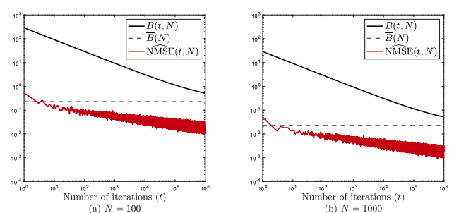
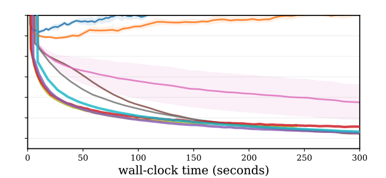
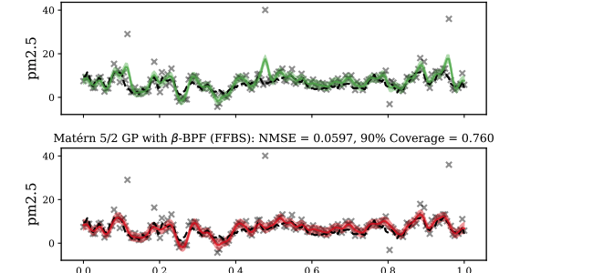
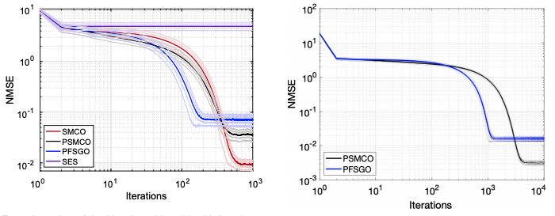
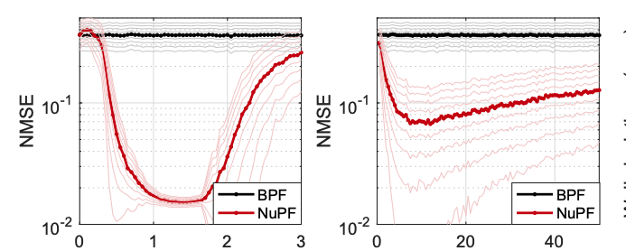

I am a Research Associate within the Data-Centric Engineering programme at The Alan Turing Institute, working with Prof. Mark Girolami as a part of the CoSInES project. I am also a part of the Computational Statistics and Machine Learning Group (CSML) at the University of Cambridge. Previously, I was a Research Fellow of the University of Warwick, with a joint appointment between Dept. of Computer Science and Dept. of Statistics, based at The Turing, working with Theo Damoulas as a member of the Warwick Machine Learning Group. I completed my PhD under the supervision of Joaquin Miguez within the Signal Processing Group at Carlos III University of Madrid. Before that, I got my engineering degrees from Istanbul Tech focusing on signal processing. Here is my usually up-to-date CV.
My research interests revolve around computational statistics, machine learning, and signal processing. More specifically, I am interested in stochastic optimization, Markov chain Monte Carlo, sequential Monte Carlo and their applications in these fields.
See
works page for preprints, papers, slides, posters, and other things related to my work. I maintain a research blog called
almost stochastic for short notes which might be of interest to other people.
Please feel free to reach out if you would like to work together.
Here are some more links: My Google Scholar, github, LinkedIn.
Recent Highlights

The 24th International Conference on Artificial Intelligence and Statistics (AISTATS), 2021.
We introduce the probabilistic sequential matrix factorization (PSMF) method for factorizing time-varying and non-stationary datasets consisting of high-dimensional time-series. In particular, we consider nonlinear Gaussian state-space models where sequential approximate inference results in the factorization of a data matrix into a dictionary and time-varying coefficients with (possibly nonlinear) Markovian dependencies. The assumed Markovian structure on the coefficients enables us to encode temporal dependencies into a low-dimensional feature space.
[paper] [code] [slides]

Statistics and Computing volume 31, 12 (2021).
We investigate an adaptation strategy based on convex optimisation which leads to a class of adaptive samplers. These samplers rely on the iterative minimisation of the \(\chi^2\)-divergence between an exponential family proposal and the target. We prove non-asymptotic error bounds for the mean squared errors (MSEs) of these algorithms, which explicitly depend on the number of iterations and the number of samples together. We also demonstrate explicit links between hyperparameters of these samplers, the number of samples, and the number of iterations.
[paper]

NeurIPS 2020
We analyse the properties of an unbiased gradient estimator of the ELBO for variational inference, based on the score function method with leave-one-out control variates. We show that this gradient estimator can be obtained using a new loss, defined as the variance of the log-ratio between the exact posterior and the variational approximation, which we call the log-variance loss. Under certain conditions, the gradient of the log-variance loss equals the gradient of the (negative) ELBO. We show theoretically that this gradient estimator, which we call VarGrad due to its connection to the log-variance loss, exhibits lower variance than the score function method in certain settings, and that the leave-one-out control variate coefficients are close to the optimal ones.
[paper], [code]

NeurIPS 2020
We introduce a framework for inference in general state-space hidden Markov models (HMMs) under likelihood misspecification. In particular, we leverage the loss-theoretic perspective of Generalized Bayesian Inference (GBI) to define generalised filtering recursions in HMMs, that can tackle the problem of inference under model misspecification. In doing so, we arrive at principled procedures for robust inference against observation contamination by utilising the β-divergence. Operationalising the proposed framework is made possible via sequential Monte Carlo methods (SMC), where most standard particle methods, and their associated convergence results, are readily adapted to the new setting.
[paper], [code]

Statistics and Computing volume 30, pages 1645–1663 (2020)
We introduce and analyze a parallel sequential Monte Carlo methodology for the numerical solution of optimization problems that involve the minimization of a cost function that consists of the sum of many individual components. The proposed scheme is a stochastic zeroth-order optimization algorithm which demands only the capability to evaluate small subsets of components of the cost function. It can be depicted as a bank of samplers that generate particle approximations of several sequences of probability measures. These measures are constructed in such a way that they have associated probability density functions whose global maxima coincide with the global minima of the original cost function. We provide explicit convergence rates in terms of the number of generated Monte Carlo samples and the dimension of the search space.
[paper]

Statistics and Computing, volume 30, pages 305–330(2020)
We investigate a new sampling scheme aimed at improving the performance of particle filters whenever (a) there is a significant mismatch between the assumed model dynamics and the actual system, or (b) the posterior probability tends to concentrate in relatively small regions of the state space. The proposed scheme pushes some particles toward specific regions where the likelihood is expected to be high, an operation known as nudging in the geophysics literature. We reinterpret nudging in a form applicable to any particle filtering scheme, as it does not involve any changes in the rest of the algorithm. We prove analytically that nudged particle filters can still attain asymptotic convergence with the same error rates as conventional particle methods. Simple analysis also yields an alternative interpretation of the nudging operation that explains its robustness to model errors.
[paper]
{kind=link}
{kind=link}
{kind=link}
{kind=link}
{kind=link}